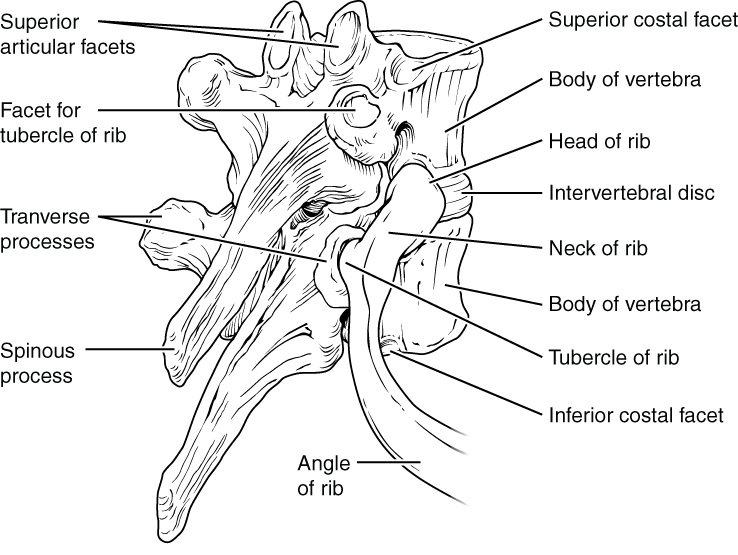

Press on the middle of your chest and you feel a flat bone. Run your hands around your sides and you feel the ribs curving back toward your spine. Together they make a flexible cage around your heart and lungs. This page covers rib cage anatomy: the three parts of the sternum and its landmarks, the parts of a rib, and how true, false and floating ribs differ.
The thoracic cage
The thoracic cage (thorac- = chest), also called the rib cage, is the bony framework of the chest (Figure 1). It has three parts, all in the axial skeleton:
- the 12 thoracic vertebrae at the back,
- 12 pairs of ribs, each with a bar of hyaline cartilage at its front end, and
- the sternum, the breastbone, in the front midline.
The cage surrounds the thoracic cavity. It shields the heart and lungs, and the organs tucked under the dome of the diaphragm, such as the liver and spleen, from blows. Because its front ends are cartilage rather than bone, it can also bend and spring back. When you breathe in, the ribs swing up and out, and the cage widens.
![Two front views. On the left, the breastbone on its own: a wide top piece with a dip in its upper edge and notches at its upper corners, a long middle piece joined to it at a slight ridge, and a small pointed tip below. On the right, the bony chest: twelve numbered ribs curving from the backbone around to the front, bars of cartilage joining the upper ribs to the breastbone, the lower cartilages joining each other along the lower edge of the cage, the two lowest ribs ending free, the collarbones across the top, and the gaps between the ribs.](../figures/os-7-32.jpg)
The sternum
The sternum (sternon = chest) is a flat bone about 15 to 17 cm long in an adult, shaped a little like a short sword pointing down. It has three parts, top to bottom:
- The manubrium (manubrium = handle) is the wide top piece, the sword's handle. The first pair of ribs and the collarbones attach to it.
- The body of the sternum is the long middle piece, the blade. The cartilages of ribs 2 to 7 attach along its sides.
- The xiphoid process (xiph- = sword; -oid = like) is the small tip at the bottom. It is cartilage in young people and slowly turns to bone, usually by about age 40. No ribs attach to it.
Landmarks you can feel
- The jugular notch (jugul- = throat), also called the suprasternal notch (supra- = above), is the dip at the top of the manubrium, between the inner ends of your collarbones. You can press into it at the base of the front of your neck.
- The sternal angle is the slight horizontal ridge where the manubrium meets the body. The two parts sit at a slight angle, so you can feel the ridge about 5 cm below the jugular notch. The cartilage of the second rib attaches right at this level, on each side.
The sternal angle is how clinicians count ribs. The first rib is hidden behind the collarbone, so you cannot feel it. Find the sternal angle, slide your finger sideways onto the second rib's cartilage, and count down from there: the space below it is the second space between ribs, then the third rib, and so on. The sternal angle also lines up at the back with the disc between T4 and T5.
The sternum in CPR
In chest compressions for CPR, the heel of your hand goes on the lower half of the sternum, in the center of the chest. That places the push over the heart and keeps it off the xiphoid process. A hard push on the xiphoid can break it, and its tip can then be driven into the liver just below.
The parts of a rib
A typical rib is a long, curved, flattened bone. Follow one from back to front (Figure 2 and Figure 3):
- The head of the rib is the back end. It meets the costal facets on the sides of two neighboring vertebral bodies and the disc between them. For example, the head of the fifth rib meets the bodies of T4 and T5.
- The neck of the rib is the short, narrow part just beyond the head.
- The tubercle of the rib (tuber- = knob) is a small bump where the neck meets the rest of the rib. It meets the costal facet on the transverse process of its own vertebra, so the fifth rib's tubercle meets T5.
- The angle of the rib is the point of sharpest bend, a few centimeters beyond the tubercle, where the rib turns forward. It is the weakest point of the rib and a common place for it to break.
- The body (or shaft) curves forward around the side of the chest.
- The costal groove (cost- = rib) runs along the lower edge of the body's inner surface. A nerve, an artery and a vein run along each rib in this groove.
At its front end, each rib continues as a bar of hyaline cartilage, the costal cartilage. The costal cartilages are what let the cage flex. In older adults they partly calcify, which makes the chest stiffer.
The costal groove has a practical use. When a needle or tube has to go between two ribs, for example to drain fluid from the pleural cavity, it is placed just above the upper edge of the lower rib. That keeps it away from the nerve and vessels sheltered under the lower edge of the rib above.

True, false and floating ribs
All 12 pairs of ribs meet the thoracic vertebrae at the back. They are sorted by what happens at the front (Figure 1).
- True ribs are ribs 1 to 7. Each one's own costal cartilage reaches the sternum directly.
- False ribs are ribs 8 to 12. They do not reach the sternum on their own.
- The cartilages of ribs 8, 9 and 10 each join the cartilage of the rib above, so they reach the sternum only indirectly, through the seventh rib's cartilage. Together, these joined cartilages form the curved lower edge of the front of the cage, the costal margin.
- Ribs 11 and 12 are the floating ribs. Their short cartilages end in the muscles of the side and back wall of the abdomen, with no attachment at the front at all.
| True ribs | False ribs (not floating) | Floating ribs | |
|---|---|---|---|
| Rib numbers | 1 to 7 | 8 to 10 | 11 and 12 |
| Front attachment | Own costal cartilage straight to the sternum | Costal cartilage joins the cartilage of the rib above | None; the tip ends in muscle |
| Reaches the sternum? | Yes, directly | Yes, indirectly | No |
| Back attachment | Head and tubercle meet the vertebrae | Head and tubercle meet the vertebrae | Head only; no tubercle contact |
| Counted as false ribs? | No | Yes | Yes |
Differences between ribs
The ribs are not all alike. The first rib is the shortest, flattest and most sharply curved, and it sits tucked under the collarbone. Because it is so well protected, breaking it takes great force, so a first-rib fracture warns of a severe injury. The ribs lengthen down to about the seventh, then shorten again. The middle ribs, about 4 to 9, are the ones broken most often, because they are long and exposed at the sides of the chest.
When two or more neighboring ribs each break in two or more places (some sources require three ribs), a section of the chest wall comes loose from the rest of the cage. This is a flail chest. As the person breathes in and the rest of the chest widens, the loose section is sucked inward instead of moving out with the cage around it.
Summary
The thoracic cage is made of the 12 thoracic vertebrae, 12 pairs of ribs with their costal cartilages, and the sternum. The sternum has three parts: the manubrium, the body and the xiphoid process. The jugular notch is the dip at the top of the manubrium, and the sternal angle, where the manubrium meets the body, marks the level of the second rib and is used to count ribs. A typical rib has a head that meets two vertebral bodies, a neck, a tubercle that meets a transverse process, an angle, a body and a costal groove sheltering a nerve and vessels. True ribs (1 to 7) reach the sternum by their own cartilage; false ribs (8 to 12) do not, and the floating ribs (11 and 12) have no front attachment at all.